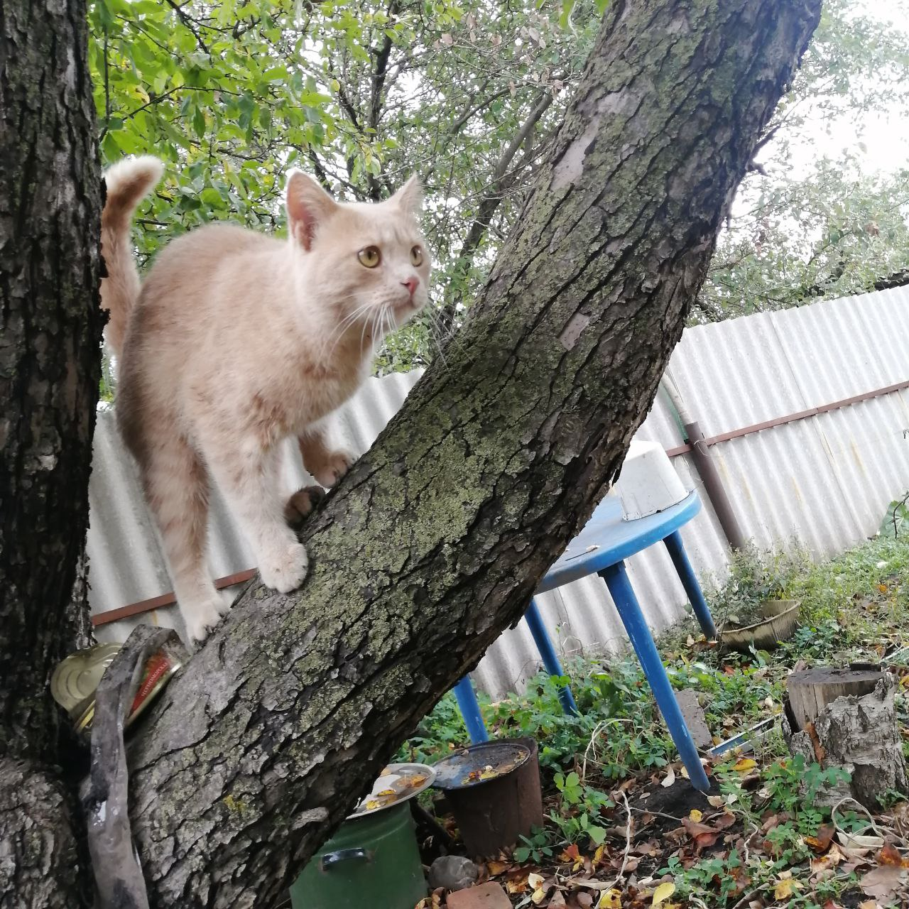
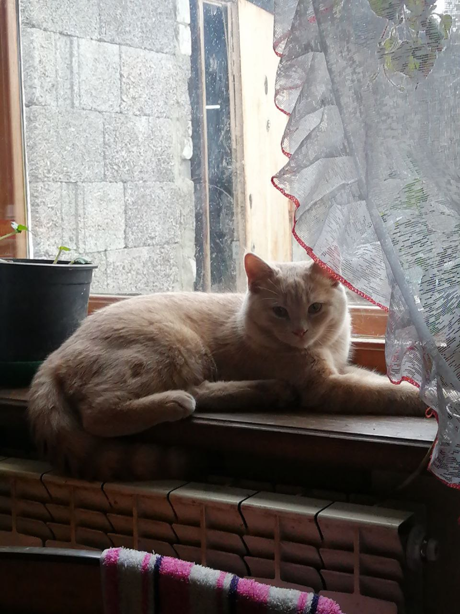
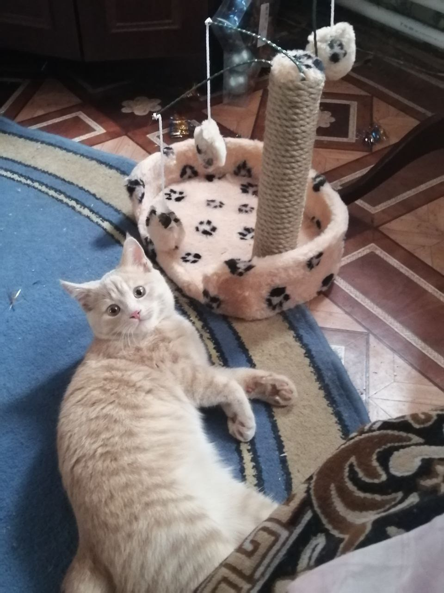
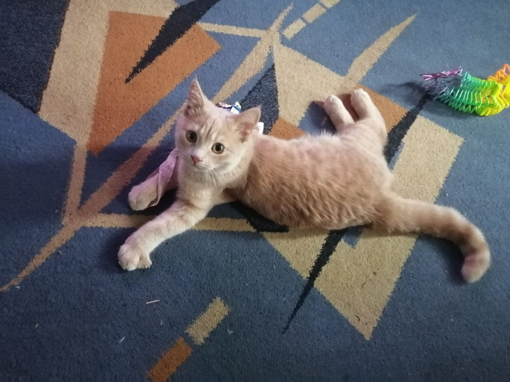

Рыжий талисман
Если к дому подошел рыжий кот, то с питомцем впустишь богатство
Суеверия и приметы
- Наши предки возвели "солнечного зверя" в ранг целителя
- Зверек с золотистым цветом шерсти способен излечить не только физические недуги
- Если рыжик ко живет в доме, значит, хозяевам повезло с энергетикой
- На Руси всегда знали - рыжий кот к деньгам
Кликни на поле ниже-->
Это мой домашний любимец - Тиша. Ему 2 годика или 24 года по кошачьим измерениям.
Кот - настоящий гурман. Предпочитает есть продукцию фирмы жми
Портфолио кота
- Тиша покоряет вершины
- Следит за обстановкой дома
- Немного ошарашен - сrazy cat
- Занимается гимнастикой



